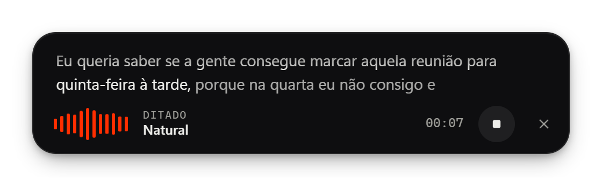
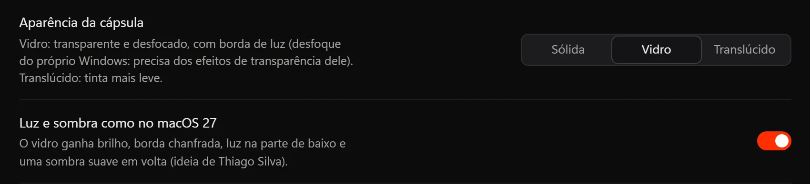
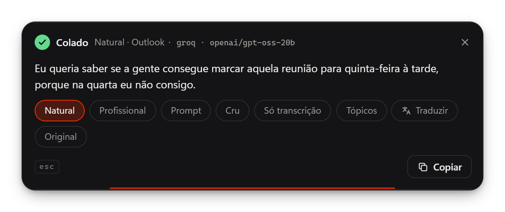

2.2: ক্যাপসুল যায় আপনি যেখানে চান।
রেকর্ডিংয়ের সময় ক্যাপসুল টেনে নিন বা নিজের পছন্দের জায়গা বেছে নিন। ব্যর্থ ডিকটেশনে আসে আবার চেষ্টা করুন বোতাম, আর অ্যাপ এখন ১০টি ভাষায় কথা বলে।
টেনে সরানো যায় এমন ক্যাপসুল, আবার চেষ্টা করুন ও ১০টি ভাষা
ক্যাপসুলের আর কোনো নির্দিষ্ট জায়গা নেই: রেকর্ডিংয়ের সময় টেনে নিন বা নিজের পছন্দের জায়গা বেছে নিন। ব্যর্থ ডিকটেশন আর হারায় না, আর অ্যাপ এখন Windows-এর ভাষা অনুসরণ করে।
-
ক্যাপসুল সরান
- রেকর্ডিংয়ের সময় টানা: ক্যাপসুলে ক্লিক করে স্ক্রিনের যেকোনো কোণে টেনে নিন, অন্য মনিটরেও। সেই ডিকটেশন শেষ না হওয়া পর্যন্ত এটি যেখানে ছেড়েছেন সেখানেই থাকে; পরেরটিতে ডিফল্ট জায়গায় ফিরে যায়।
- কাস্টম অবস্থান: নিচে ও উপরে ছাড়াও, স্ক্রিনের একটি ছোট ছবিতে ক্যাপসুল টেনে জায়গা বেছে নিন; কোণ, কিনারা ও মাঝখানে এটি নিজে থেকে বসে যায়। পরীক্ষা করুন দেখায় এটি কোথায় দেখা যাবে।
- শেষবার টেনে নেওয়া জায়গা ব্যবহার করুন সেই জায়গাটাই নেয় যেখানে আপনি ক্যাপসুল ছেড়েছিলেন। সবকিছু সাধারণ → ভাসমান উইন্ডো-তে, যেখানে টানা বন্ধও করা যায়।
-
আবার চেষ্টা করুন ও পরপর ডিকটেশন
- ট্রান্সক্রিপশন ব্যর্থ হলে (নেটওয়ার্ক, সীমা, কী) ত্রুটি কার্ডে আবার চেষ্টা করুন বোতাম আসে এবং কার্ডটি ৩০ সেকেন্ড স্ক্রিনে থাকে। ইতিহাসেও ব্যর্থতাটি কারণসহ একই বোতামের সঙ্গে দেখা যায়।
- ডিকটেশন যেমন হয়েছিল তেমনই আবার করে: একই অ্যাপ, স্টাইল ও অনুবাদ, এখনকার প্রদানকারী ও কী দিয়ে। রেকর্ডিং থাকে শুধু মেমরিতে (শেষ ৩টি ব্যর্থতা), কখনো ডিস্কে নয়।
- একই ফিল্ডে পরপর দুটি ডিকটেশনের মাঝে একটি স্পেস বসে, যদি কার্সর আগেরটি যেখানে শেষ হয়েছিল সেখানেই থাকে। টার্মিনালে নয়, আর জাপানি ও চীনার মতো স্পেসহীন লিপিতেও নয়।
-
১০টি ভাষা
- ইন্টারফেস এখন পর্তুগিজ, ইংরেজি ও স্প্যানিশের পাশাপাশি ফরাসি, জার্মান, জাপানি, চীনা, রুশ, হিন্দি ও বাংলাতেও, প্রতিটি লিপির জন্য Windows-এর সঠিক ফন্টসহ।
- স্বয়ংক্রিয় (Windows), নতুন ডিফল্ট, Windows-এর ভাষা অনুসরণ করে। যাঁরা আগে থেকে অ্যাপ ব্যবহার করছেন, তাঁদের বেছে নেওয়া ভাষাই থাকে।
- ট্রে মেনু, ত্রুটির বার্তা আর অন্তর্নির্মিত স্টাইলের নাম ইন্টারফেসের ভাষা অনুসরণ করে।
-
সংঘাতহীন শর্টকাট
- নতুন ইনস্টলেশনে আবার পেস্ট করুন-এর কোনো শর্টকাট থাকে না, কারণ Ctrl Alt V হলো Office-এর পেস্ট স্পেশাল। এটি ট্রে মেনুতে থাকে, আর চাইলে একটি শর্টকাট বেছে নিতে পারেন।
- যেসব কিবোর্ডে AltGr K দিয়ে কোনো অক্ষর টাইপ হয়, সেখানে কমান্ড শুরু হয় শর্টকাট ছাড়া, যাতে ওই কী-টা দখল না হয়, আর শর্টকাট স্ক্রিন কারণটা ব্যাখ্যা করে।
-
গোপনীয়তা ও মাইক্রোফোন
- পরিচিতি স্ক্রিনে নতুন গোপনীয়তা অংশ: কোন তথ্য PC-তে থাকে, প্রতিটি প্রদানকারীর কাছে কী যায় আর API কী কোথায় থাকে। পুরো নীতি এখানে।
- মাইক্রোফোনের ত্রুটি এখন আরও স্পষ্ট: Windows মাইক্রোফোন আটকে দিলে অ্যাপ বলে দেয় কোথায় চালু করতে হবে; অন্য কোনো অ্যাপ এককভাবে সেটি ব্যবহার করলেও জানায়।
- অন্য কোনো অ্যাপ ক্লিপবোর্ড আটকে রাখলে আলাদা বার্তা।
-
সংশোধন
- PC-র শব্দ বন্ধ থাকা অবস্থায় রেকর্ডিংয়ের মাঝখানে অ্যাপ বন্ধ হয়ে গেলে শব্দ বন্ধই থেকে যেত। এখন পরেরবার খোলার সময় ফিরে আসে।
- Windows-এর সঙ্গে চালু এখন আরও নির্ভরযোগ্য: অ্যাপ টাস্ক শিডিউলারে একটি লগঅন টাস্কও তৈরি করে, অ্যাডমিন অনুমতি ছাড়া। আর টাস্ক ম্যানেজারে স্টার্টআপ বন্ধ করলে এখন সত্যিই কাজ করে।
- অনুবাদসহ কমান্ড বা “আরেকটি সংস্করণ” এখন আর দুটি সংস্করণ ফেরত দেয় না, শেষে কোনো নোটও না।
- আরবি, হিব্রু, ফারসি ও উর্দু লেখা ওভারলে, ইতিহাস ও চ্যাটে সঠিক দিকে দেখায়।
এখন GPL-3.0-এর অধীনেFlowVoice বিনামূল্যে ও ওপেন সোর্সই থাকছে। পরিবর্তিত কোনো সংস্করণ বিতরণ করা হলে তার সঙ্গে একই লাইসেন্সে সোর্স কোড দিতে হবে। লাইসেন্স পড়ুন
আরও স্থির প্রিভিউ ও কাচের ক্যাপসুল
পরপর দুটি উত্তর একমত হলে তবেই কোনো শব্দ স্থির হয়। ততক্ষণ সেটি হালকা দেখায় এবং বদলাতে পারে। তারপর আর পেছনে ফেরে না।

-
লাইভ প্রিভিউ
- লেখা আর পেছনে ফেরে না: প্রতিটি মডেলের একবারে একটিই অনুরোধ চলে, আর দেরিতে আসা উত্তর বাদ দেওয়া হয়।
- প্রিভিউ আর আগের লেখা প্রসঙ্গ হিসেবে পাঠায় না (কখনো কখনো সেটি পুনরাবৃত্ত হয়ে ফিরে আসত)।
- গতি চলে Groq নিজে যে সীমা জানায় সেই অনুযায়ী, আর চূড়ান্ত ট্রান্সক্রিপশনের জন্য সবসময় জায়গা রাখে, যা এখন আর প্রিভিউর ঠিক পরে “সীমা পূর্ণ” পায় না।
- লম্বা বাক্য সর্বোচ্চ ১৫ সেকেন্ডে বন্ধ করা হয়: দ্রুত উত্তর, আর বিনামূল্যের প্ল্যানের কম সেকেন্ড খরচ।
- প্রিভিউ থেকে Gemini-র বাড়তি লেন সরানো হয়েছে (এটি Whisper-এর চেয়ে আলাদা লিখত এবং ধীর ছিল)।
- একই ৪টি অডিও দিয়ে মাপা: স্থির দেখিয়ে পরে বদলানো লেখা প্রতি ডিকটেশনে ২.৫–৭.৫ বার থেকে নেমে শূন্যে এসেছে, আর আপডেট আসে প্রতি ~১.২–১.৫ সেকেন্ডে (আগে ~১.৭–২.০ সেকেন্ড)।
-
ক্যাপসুলে কাচ
- সাধারণ → ভাসমান উইন্ডো-তে: কাচ (স্বচ্ছ ও ঝাপসা, উজ্জ্বল কিনারাসহ) বা অর্ধস্বচ্ছ (হালকা আভা), Windows-এর নিজস্ব ঝাপসা ভাবসহ, যা গ্রাফিক্স কার্ড তৈরি করে।
- macOS 27-এর মতো আলো ও ছায়া: ঝলক, ঢালু কিনারা, নিচের দিকে আলো আর নরম ছায়া (আইডিয়া Thiago Silva-র)।
- এর জন্য Windows-এর স্বচ্ছতা প্রভাব লাগে; সেগুলো বন্ধ থাকলে বা শক্তি সাশ্রয় চালু থাকলে ক্যাপসুল নিরেট থাকে।
-
সংশোধন
- ব্যস্ত PC-তে Windows-এর সঙ্গে চালু হওয়ার সময় উইন্ডো কখনো কখনো সেটিংসের বদলে ত্রুটি দেখাত।
- আপডেটের পর FlowVoice নিজে থেকেই আবার খোলে, উইন্ডো খোলা অবস্থায়।

কেন নতুন করে লেখা
২০২৬ সালে 1.x অনেকের জন্য কাজ করা বন্ধ করে দেয়: যে GitHub Models-এর কথা এটি বলত, তা বন্ধ হয়ে যায়; Groq-এ যে মডেলগুলো বিনামূল্যে ছিল, সেগুলো বিনামূল্যের প্ল্যান থেকে সরে যায়; Gemini-র পুরোনো সংস্করণ বন্ধ করে দেওয়া হয়। আর 1.x আসল ত্রুটি লুকিয়ে রাখত, তাই মনে হতো অ্যাপটা বুঝি “কাজই করে না”।
2.0 তৈরি হয়েছে যাতে এমন আর না ঘটে: এটি প্রদানকারীর আসল বার্তা দেখায় এবং অবসরে যাওয়া মডেল নিজে থেকেই বদলে নেয়।
কী বদলেছে

-
ডিকটেশন
- লাইভ প্রিভিউ: কথা বলার সময়ই লেখা দেখা যায়।
- নতুন প্রম্পট স্টাইল, যা কথাকে AI-তে পাঠানোর মতো করে ছাঁটে; তীব্রতা বদলানো যায়।
- স্বাভাবিক, পেশাদার, কাঁচা, শুধু ট্রান্সক্রিপ্ট আর আপনার নিজের স্টাইল।
- অ্যাপ অনুযায়ী স্টাইল:
 Outlook-এ সবসময় পেশাদার,
Outlook-এ সবসময় পেশাদার,  VS Code-এ সবসময় প্রম্পট।
VS Code-এ সবসময় প্রম্পট। - ফিলার শব্দ (“মানে”, “ওই”, তোতলানো) বাদ দেয় এবং আপনার শব্দভান্ডার মেনে চলে।
-
নতুন ওভারলে
- ফলাফলের পর এক ক্লিকে অন্য স্টাইলে নতুন করে লেখে বা কয়েক ডজন ভাষায় অনুবাদ করে।
- বদলান আগের পেস্টটি সরিয়ে নতুন সংস্করণ পেস্ট করে।
- মাউস বা ফোকাসে থাকা উইন্ডোকে অনুসরণ করে, আপনি যে মনিটরে আছেন সেখানে।
- Esc যেকোনো সময় বাতিল করে।
-
নতুন শর্টকাট
- নির্বাচনের ওপর কমান্ড: যেকোনো অ্যাপে লেখা নির্বাচন করে বলুন কী করতে হবে (“আরও আনুষ্ঠানিক”, “বুলেটে সারাংশ”)।
- আবার পেস্ট করুন: শেষ ডিকটেশনটি ফোকাসে থাকা অ্যাপে।
- কণ্ঠে অনুবাদ, আর ওয়েব সার্চ ও উৎসসহ ভয়েস সহকারী।
- চেপে ধরে বলার মোড (push-to-talk)।
-
নির্ভরযোগ্য
- প্রদানকারী ও একাধিক কীর মধ্যে ফেইলওভার; ক্লাউড বন্ধ থাকলে লোকাল মডেল ব্যবহার করে।
- অবসরে যাওয়া মডেল স্বয়ংক্রিয়ভাবে বদলানো হয়, প্রতিদিনের যাচাইসহ।
- নিরাপদ পেস্ট: লক্ষ্য উইন্ডো যাচাই করে এবং আপনার ক্লিপবোর্ডে যা ছিল তা ফিরিয়ে দেয়।
- মাইক্রোফোন বিচ্ছিন্ন হলে জানায় এবং অন্যটি ব্যবহার করে।
-
আরও ভালো অফলাইন
- ভাষা অনুযায়ী মডেলের তালিকা, আপনার ভাষার জন্য সুপারিশসহ।
- ব্রাজিলীয় পর্তুগিজের জন্য টিউন করা মডেল (Distil-Whisper pt-BR)।
- লোকাল ট্রান্সক্রিপশন কয়েক গুণ দ্রুত।
- ডিকটেশন থামালেই মডেল মেমরি থেকে সরে যায়; যখন খুশি মডেল মুছে ফেলুন।
-
ইন্টারফেস
- নতুন করে সাজানো সেটিংস, সার্চ (Ctrl K) সহ।
- প্রথমবার চালুর সময় সেটআপ উইজার্ড, টিউটোরিয়াল ও প্রতিটি কীর পরীক্ষাসহ।
- লাইট ও ডার্ক থিম, পছন্দের অ্যাকসেন্ট রং, PT/EN/ES।
- নতুন আইকন ও সার্চ করা যায় এমন ইতিহাস।
1.x × 2.0
| দিক | 1.x | 2.0 |
|---|---|---|
| Base | Python + PySide6 | Rust (Tauri 2) + Svelte |
| ইনস্টলার | বড়, Python সহ | কয়েক MB; মডেল শুধু চাইলে |
| কথা বলার সময় | স্ক্রিনে কোনো লেখা নেই | লেখার লাইভ প্রিভিউ |
| ফলাফলের পর | পেস্ট, ব্যস | স্টাইল বদল, অনুবাদ, প্রতিস্থাপন |
| প্রদানকারী ব্যর্থ হলে | সাধারণ ত্রুটি | পরের কী বা প্রদানকারী, আসল বার্তাসহ |
| অবসরে যাওয়া মডেল | কাজ বন্ধ হয়ে যেত | স্বয়ংক্রিয়ভাবে বদলানো হয় |
| API কী | কনফিগারেশন ফাইল | সিস্টেমের ক্রেডেনশিয়াল ভল্ট |
| আপডেট | স্বয়ংক্রিয় | স্বয়ংক্রিয় ও ডিজিটালি স্বাক্ষরিত |
1.x থেকে আসছেন?ওপর দিয়েই ইনস্টল করুন। প্রথমবার চালুর সময় 2.0 আপনার পুরোনো কী নিজে থেকেই সিস্টেমের ভল্টে নিয়ে আসে। GitHub Models ব্যবহার করে থাকলে Groq-এ একটি বিনামূল্যের কী তৈরি করুন: কয়েক মিনিট লাগে।
প্রথম প্রজন্ম
মূল সংস্করণ, Python-এ। প্রধান দিকগুলো, নতুন থেকে পুরোনো:
- 1.9রিসার্চ মোডে Tavily দিয়ে ওয়েব সার্চ, কী দেখার জন্য পাসওয়ার্ড, আর পর্তুগিজ, ইংরেজি ও স্প্যানিশে ইন্টারফেস।
- 1.8নতুন করে সাজানো ওভারলে এবং ট্রান্সক্রিপশনের “হ্যালুসিনেশন” ঠেকানোর ফিল্টার।
- 1.5–1.7অ্যাপের ভেতরেই স্বয়ংক্রিয় আপডেট।
প্রতিটি সংস্করণের পূর্ণ নোট GitHub Releases-এ।